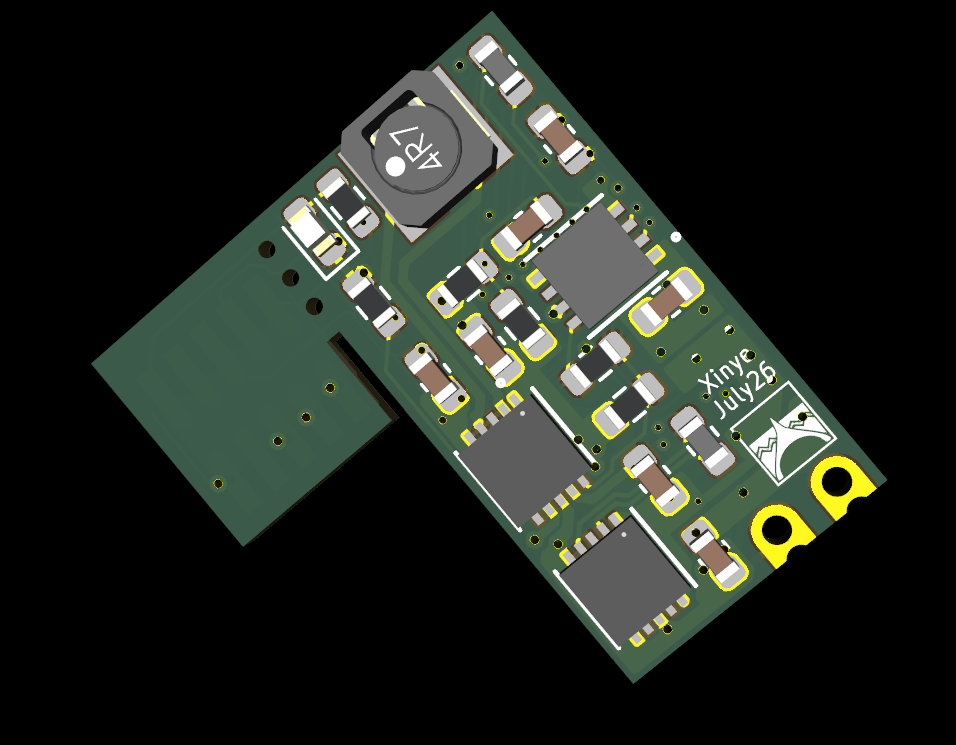

Caterpillar (working name) is a small, BLE-controlled vibrotactile board: an nRF54L15 module driving a vibration motor through a DRV8212 H-bridge and an STBB1-APUR boost rail, with an ASM330 IMU and a MAX5419 digital potentiometer that sets the motor voltage. As of Jul 2026 the design is at rev-2 — fab-ready pending gerber export.
Firmware lives in Moamoa_caterpillar_firmware.

Progress
graph LR A["First boards<br/>Jun"] --> B["Saturation<br/>mystery"] --> C["Root cause<br/>Jul 2"] --> D["Rev-2 design<br/>Jul 4–6"] --> E["Copper + DFM<br/>Jul 7"] --> F["Fab +<br/>first article"] classDef done fill:#2d6a4f,stroke:#1b4332,color:#ffffff; classDef current fill:#e76f51,stroke:#7d2408,color:#ffffff,stroke-width:4px; classDef next fill:transparent,stroke:#9aa0a6,stroke-width:1.5px,stroke-dasharray:5 4,color:#9aa0a6; class A,B,C,D done; class E current; class F next;
Status: rev-2 copper layout complete and DFM-reviewed → fab-ready pending gerber export. Next: fabrication + first-article bring-up.
This is a running development log — newest first.
Jul 2026 — Rev-2 redesign
- 20260707 - Caterpillar - Rev-2 copper layout and DFM review — copper layout hardened and taken through a full DFM/mechanical pass (route criticals, plane-slot SPI tradeoff, via surgery, edge clearance, status LED). Fab-ready pending gerber. Includes board renders.
- 20260706 - Caterpillar - Rev-2 electrical design complete — the rev-2 schematic in one session: IMU moved to dedicated SPI, motor-rail safety hardware, VDC-sense telemetry, 4-layer stackup.
- 20260706 - Caterpillar - Motor-rail failure root cause closed — the failure is fully explained: an undersized power inductor (L5) + floating MODE pin + insufficient cap bias headroom; a microseconds-scale UVLO transient, not steady-state draw.
- 20260704 - Caterpillar - Board redesign in KiCad — mechanical redesign kickoff: removable SWD tab, 0402→0603 passives, castellated PWM edges, JST-SH battery connector.
Jul 2026 — Diagnosis: the power fault
- 20260702 - Caterpillar - Why VDC saturates at 3.1V — the headline puzzle: the motor rail seemed stuck at ~3.1 V (and collapsed to ~1 V above it). It’s a brown-out reset, not the digipot — traced through the schematic.
- 20260702 - Caterpillar - LiPo battery test fried inductor — a 30C LiPo fried the 0402 inductor; peak-current analysis vs the 350 mA part.
- 20260702 - Caterpillar - Schematic to firmware cross-check — full netlist ↔ firmware pin verification, plus a batch of firmware fixes.
- 20260702 - Caterpillar - Next board revision fixes — the prioritized hardware fix list that rev-2 implements.
Jun 2026 — First boards & the saturation mystery
- 20260624 - Caterpillar - BLE PWM frequency control via Python — set the motor PWM frequency live over BLE.
- 20260622 - Caterpillar - Eval board strategy and MAX5417 resistance change — switch to eval boards for modular subsystem testing.
- 20260621 - Caterpillar - Board testing and MAX5419 saturation — first assembled boards: VDC appears to saturate at ~3.1 V (the mystery solved above).
- 20260615 - Caterpillar - NRF54L15 DK motor drive test — initial motor-drive bring-up on the dev kit.